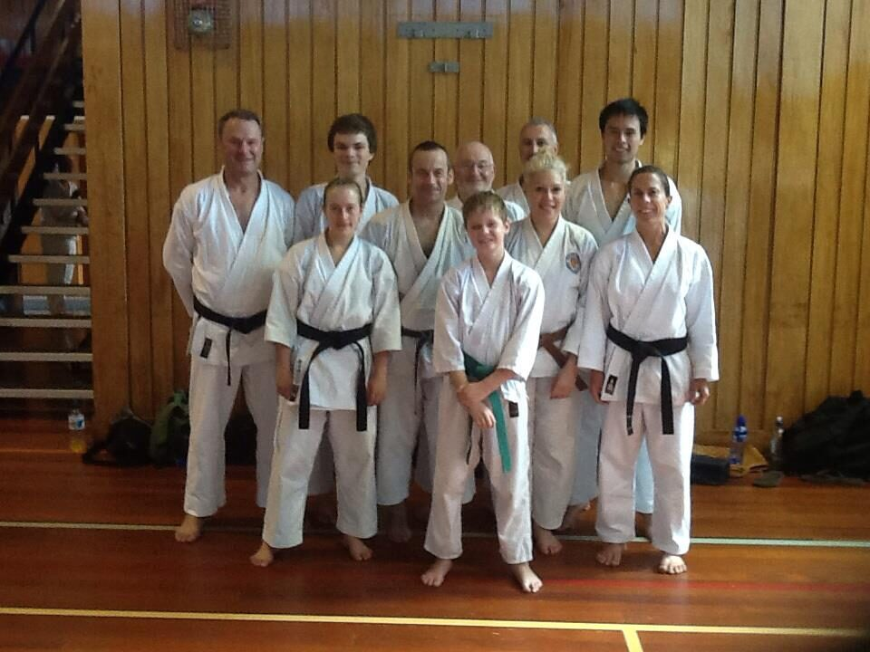
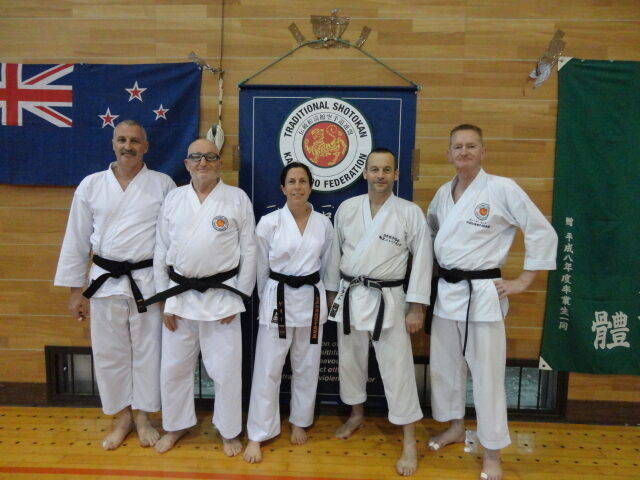
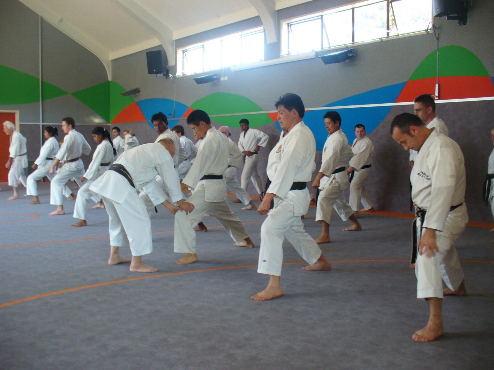
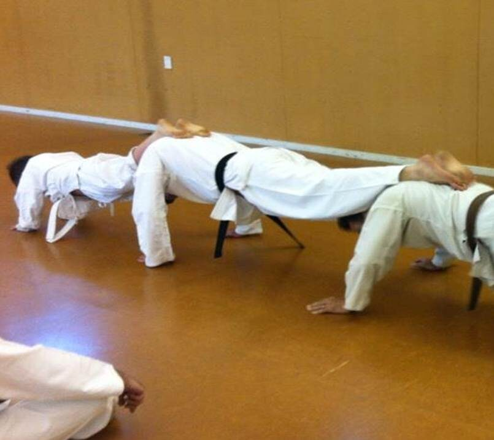
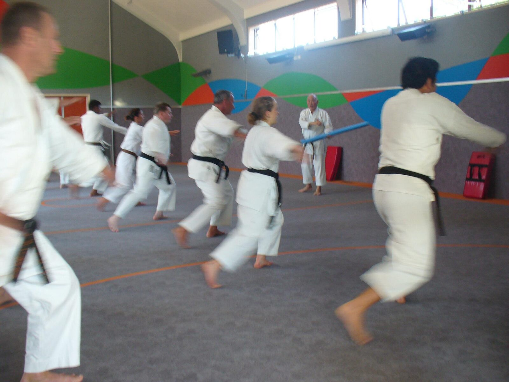
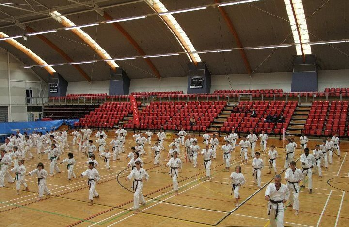
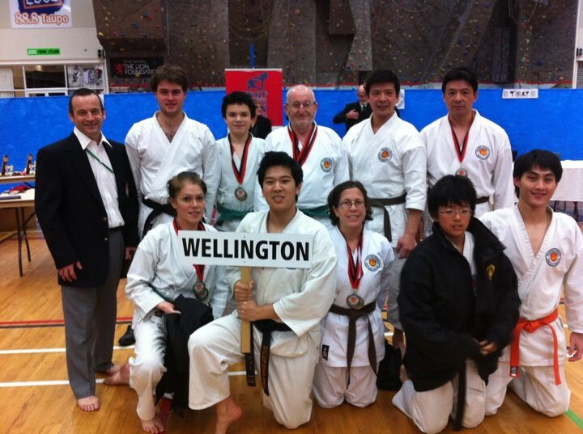

Wellington · New Zealand · Est. 1992
Traditional Shotokan Karate for all ages and grades in Newlands, Wellington. Affiliated to the TSKF and ISKF.
Training Since
1992
Sessions / Week
3 sessions
All Grades
Beginners welcome
Affiliation
TSKF / ISKF
Classes are open to adults and children together, making it easy for families to train as one. Beginners are always welcome — no experience needed.
Monday
6:30–8:00
pm · All Grades
Thursday
6:30–8:00
pm · All Grades
Sunday
4:30–6:00
pm
Senior Grades OnlyThe TSKF Wellington Dojo has been running since 1992. We offer classes for beginner and senior grades — adults and children train together, making it easy for families to join as one.
Classes include line work, pad work, kata, kumite (sparring) and practical application of techniques. Our dojo is led by Sensei Grant Stove, 6th Dan, a founding member of the Wellington Dojo with over 25 years experience.
We are affiliated to the Traditional Shotokan Karate-do Federation (TSKF) and the International Shotokan Karate Federation (ISKF).
Learn More About UsWe train at two locations in the Newlands area, Wellington.
Newlands Intermediate School Hall
Bracken Road
Newlands, Wellington
Training sessions, gradings, competitions and events over the years.






